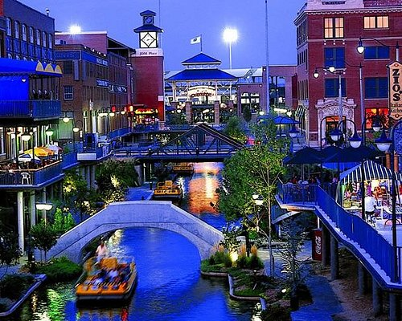
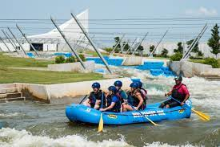

My home of Oklahoma City
Oklahoma City, OK (OKC for short) has been my home for many years now. While it isn't perfect, there is a lot to love about this up and coming city. Affectionately named "The Modern Frontier", Oklahoma City has grown from the quiet city center of the state to a bustling and thriving travel destination.
No matter what you enjoy on vacation, you are sure to find something in OKC to love!


This project was coded by Cristal and is open-sourced on GitHub